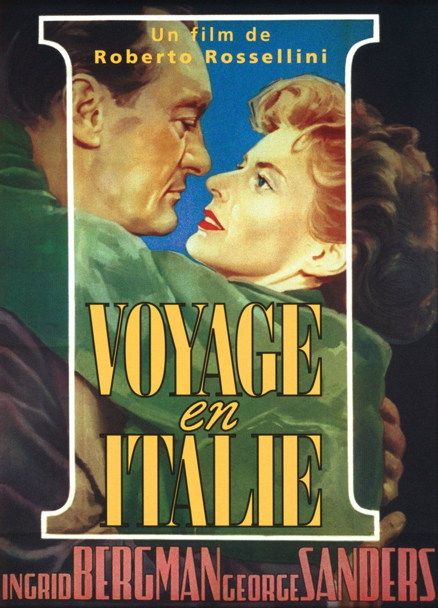

Fiche technique
- Titre original
- Viaggio in Italia
- Réalisation
- Roberto Rossellini
- Scénario
- Vitaliano Brancati, Roberto Rossellini (Antonio Pietrangeli au générique BFI)3
- Photographie
- Enzo Serafin
- Musique
- Renzo Rossellini
- Montage
- Jolanda Benvenuti
- Production
- Adolfo Fossataro, Alfredo Guarini, Roberto Rossellini
- Interprétation
- Ingrid Bergman (Katherine Joyce), George Sanders (Alexander Joyce), Maria Mauban (Marie), Anna Proclemer, Paul Muller18
- Pays
- France, Italie
- Format
- 35 mm, noir et blanc, 1.37:1, son monophonique
- Durée
- de 79 à 106 min selon les sources ; 85 min pour la version restaurée de référence (Criterion, Spine #675)18
- Sortie
- Italie, 7 septembre 1954 ; France, 15 avril 1955
- Datation
- 1954 (première exploitation) ; 1953 retenu par la Cinémathèque française et par G. Bourgois (fabrication)4

Synopsis
Alexander et Katherine Joyce, couple anglais aisé, roulent vers Naples pour liquider la succession de l'oncle Homer, dont ils ont hérité une villa. Le voyage est leur premier temps de solitude à deux depuis des années de mariage ; il révèle immédiatement ce que la vie sociale de Londres masquait — l'ennui, l'irritation, l'absence de désir.
Sur place, le couple se sépare de fait. Katherine visite seule les lieux : le Musée archéologique national, les champs Phlégréens et la Solfatare de Pouzzoles, les Cumes et l'antre de la Sibylle, les catacombes. Alexander part pour Capri, où il tente sans conviction une aventure et fréquente une société mondaine qui l'ennuie autant que sa femme. Les excursions de l'une et les échappées de l'autre ne produisent aucun événement dramatique : elles approfondissent une séparation déjà là.
Le divorce est prononcé entre eux, sans éclat, comme une décision administrative. Puis vient la visite des fouilles de Pompéi : sous leurs yeux, les archéologues coulent le plâtre dans la cavité laissée par deux corps ensevelis, et font apparaître un couple mort enlacé depuis deux mille ans. Katherine s'effondre. Sur la route du retour, la voiture est prise dans la procession de la fête de San Gennaro ; la foule les sépare, un miracle se produit — un infirme se lève et marche —, Katherine appelle Alexander, ils se rejoignent et se disent qu'ils s'aiment. La foule, elle, continue de passer.
Contexte de production
Le film naît d'un accident. Rossellini avait prévu d'adapter Duo de Colette ; les droits se révèlent indisponibles, alors que les contrats des interprètes sont déjà signés. Plutôt que d'abandonner, il improvise un autre récit et écrit les scènes au jour le jour pendant le tournage, commencé le 5 février 1953. Les studios sont ceux de Titanus, mais l'essentiel se tourne en Campanie : Naples, Capri, Cumes, Pompéi, Pouzzoles, Amalfi, Maiori.11
Cette contrainte devient la méthode. Rivette, dans sa « Lettre sur Rossellini », place le regard du cinéaste non du côté de la transfiguration, mais de la « capture » : « une chasse de chaque instant », « un mouvement incessant de prise et de poursuite… l'accent même de la conquête ». La caméra y gagne une fluidité inconnue des films néoréalistes antérieurs. Ce n'est pas un renoncement à la rigueur : c'est le déplacement de la rigueur, du scénario vers le regard.12
Le film appartient au cycle des cinq longs métrages tournés par Rossellini avec Ingrid Bergman, dont Stromboli (1950) et Europe 51 (1952) sont les deux grands précédents. Critikat lit les trois films comme une trilogie de la grâce obtenue par l'abaissement terrestre ; c'est aussi, hors écran, le moment où le couple Rossellini-Bergman est l'un des plus commentés d'Europe, ce qui pèse sur la réception d'un film qui, précisément, filme un couple qui se défait.9
Il faut enfin situer le film dans la trajectoire de son auteur. Le BFI le décrit comme un tournant « entre l'expérience néoréaliste, la collaboration avec Ingrid Bergman, et la nature avant-gardiste qui guidera le grand cinéaste romain tout au long de sa carrière ». Ce sont ces trois lignes qui se croisent en 1953-1954, et le désarroi de la critique de l'époque tient largement à ce croisement : on attendait un néoréaliste, on trouve un moderne.3
Structure narrative
Voyage en Italie n'a pas d'intrigue au sens classique : il a un calendrier. Le Ciné-club de Caen propose de lire le film sur sept jours et autour de cinq à six lieux — l'hôtel et Naples, le Musée archéologique, la Solfatare et les champs Phlégréens, les catacombes, Pompéi, la procession finale. La structure est celle d'une série de visites, non d'une chaîne de causes.10
Cette juxtaposition est le geste décisif. Dans un film classique, chaque séquence est motivée par la précédente et prépare la suivante ; ici, rien ne découle de rien. Katherine visite un musée parce qu'elle est à Naples et qu'elle n'a rien d'autre à faire. Alexander va à Capri pour la même raison. Le récit ne progresse pas : il dure. Rivette avait fixé la distinction dès 1955 : il y a « les films qui commencent et qui finissent… Hawks, Hitchcock, Murnau, Ray, Griffith », et il y a « les films qui n'ont rien de cela, et retournent au temps comme les fleuves à la mer » — « il y a Renoir et Rossellini ». On ne peut jamais désigner la scène où le mariage a basculé, parce qu'il n'y en a pas.12
Le Ciné-club de Caen résume ce mouvement par une triade — quête, attente, révélation — qu'il rattache à Rivette. La formule est commode, mais la précision s'impose : cette triade nette est une synthèse du Ciné-club, non une phrase de Rivette. Le texte de 1955 porte bien les trois termes, mais disjoints — « une quête corporelle (et donc spirituelle) », « l'angoisse de l'attente, l'idée fixe de ce qui doit venir après », et le film « de voyant » où affleure la révélation. La nuance n'est pas oiseuse : elle distingue ce que Rivette a écrit de ce que la tradition critique en a tiré.12
Ce que Rivette nomme, au fond, c'est un déplacement de régime. Voyage en Italie « offre enfin au cinéma, jusqu'alors obligé au récit, la possibilité de l'essai » — et l'essai, ajoute-t-il, « est la langue même de l'art moderne ». Le calendrier plutôt que l'intrigue, la liste plutôt que la chaîne causale : c'est la forme de l'essai portée à l'écran. D'où la difficulté que le film a longtemps posée, et qui est aussi sa définition : on ne peut pas le raconter. Le résumer, c'est en donner les étapes, c'est-à-dire précisément ce qui n'y compte pas.
Mise en scène et procédés
La voiture. Le film commence dans une automobile en marche et s'achève dans une automobile immobilisée. Entre les deux, l'habitacle est le seul lieu où les Joyce sont ensemble : espace clos, orienté dans le même sens, où l'on parle sans se regarder. La mise en scène en tire l'essentiel de son ironie — deux êtres côte à côte, face à la même route, et qui ne voient pas la même chose. Brad Stevens souligne que la séquence finale commence par les faire sortir de cette carrosserie protectrice : la foule ne les atteint qu'une fois la portière ouverte.2
La déambulation. Le Ciné-club de Caen note que Rossellini privilégie le cadre mobile et le déplacement physique des corps dans les lieux, plutôt que l'introspection psychologique : la caméra suit Bergman qui marche, et c'est la marche qui produit le sens. Bazin dit la même chose en termes d'ontologie du geste : chez Rossellini, « le geste, le changement, le mouvement physique constituent l'essence même du réel humain » ; ses personnages sont « hantés par le démon de la mobilité ». Au Musée archéologique, la statuaire antique n'illustre pas un état d'âme — elle le provoque, dans le temps réel d'un parcours de salles.13
Le paysage comme personnage — et comme conscience. La Cinémathèque française résume le film comme « le flot d'une vie conjugale, rythmée par l'ennui et le manque de désir », où la culture et les paysages italiens deviennent des personnages à part entière. Bazin va plus loin, et donne à ce constat sa formule théorique : la Naples du film, dit-il, est « filtrée par la conscience de l'héroïne », « un paysage mental à la fois objectif comme une pure photographie et subjectif comme une pure conscience ». Si le paysage y est « pauvre et limité », c'est que la conscience qui le filtre — celle d'une « bourgeoise médiocre » — est elle-même, écrit-il, « d'une rare pauvreté spirituelle ».13
Le cliché retourné. C'est peut-être le procédé le plus profond du film, et Guillaume Bourgois en a donné l'analyse la plus précise à partir du motif de la carte postale. Le Vésuve, emblème touristique de Naples, y fonctionne simultanément comme « décor merveilleux » et « décor tragique » ; le regard du guide et les stéréotypes des personnages sur l'Italie constituent le point de départ, mais le montage et le hors-champ libèrent l'image de son statut passif d'image toute faite, et lui rendent la capacité de regarder à son tour — Bourgois convoque ici Didi-Huberman et son idée de l'image qui nous regarde. Rossellini ne dénonce pas le cliché : il le filme jusqu'à ce qu'il cède.7
Les corps de Pompéi. La séquence est le sommet technique et moral du film. Le procédé de moulage — verser le plâtre dans le vide laissé par un corps disparu — est montré dans sa durée documentaire, sans musique appuyée ni montage démonstratif. Ce qui apparaît est littéralement une image obtenue d'une absence. Critikat y voit le point où la réalité matérielle traverse enfin les défenses affectives de Katherine : le « jaillissement des larmes » n'est pas provoqué par un dialogue, mais par un objet.9
Or ce moulage est aussi, pour qui lit Bazin, une mise en abyme de l'image cinématographique elle-même. Dans sa « Défense de Rossellini », Bazin définit la photographie comme « une véritable empreinte du réel, une sorte de moulage lumineux où la couleur n'apparaît pas », et pose une « identité ontologique entre l'objet et sa photographie ». La scène de Pompéi ne fait rien d'autre, au premier degré, que ce que Bazin dit de tout plan : elle prend l'empreinte d'un corps absent. Le film met en scène, à son sommet, la théorie même par laquelle son plus grand défenseur le justifiait.13
La composition décentrée. Rivette rapproche cette écriture de celle de Matisse : « ce goût des larges surfaces blanches, juste rehaussées d'un trait net », et surtout « l'asymétrisme de Matisse, la "fausseté" magistrale de la composition, calmement décentrée, qui choque… et ne révèle qu'ensuite son équilibre secret ». La rime est frappante : Bazin, indépendamment, conclut sa lettre sur la même comparaison (voir l'encadré ci-dessous). Deux textes fondateurs de 1954-1955 vont chercher, pour dire Rossellini, le même peintre.12
Personnages principaux
Katherine Joyce (Ingrid Bergman) est le centre de perception du film. Elle est celle qui regarde, qui visite, qui se laisse atteindre. Senses of Cinema relève que c'est la première fois que Bergman joue face à un partenaire qui lui tient techniquement tête, et que le mariage à l'écran mijote « dans un ragoût de ressentiments mutuels ». Deux lectures du personnage se croisent, et il vaut mieux les tenir ensemble que choisir. Rivette la sauve : une femme « égarée, perdue au royaume de la grâce », dont les regards répétés forment de « larges accords » musicaux. Bazin la juge : « bourgeoise médiocre » d'une « rare pauvreté spirituelle », dont l'étroitesse est précisément ce que le film donne à voir. La tension entre les deux — grâce chez l'un, médiocrité chez l'autre — n'est pas à résoudre : elle est le personnage.612
Alexander Joyce (George Sanders) est son exact contraire, et la réussite du film tient à ce que cette opposition ne soit jamais une caricature. Sanders y apporte une morgue élégante, une cruauté désœuvrée, une incapacité à l'émerveillement. Il ne visite pas : il s'absente. Rivette lit d'ailleurs dans son visage autre chose qu'un personnage : « Voyage en Italie offre une fable transparente, et George Sanders un visage qui ne dissimule guère celui même du cinéaste ». Le film serait alors, en partie, un autoportrait déguisé du couple Rossellini — lecture séduisante, à manier avec prudence, car Rivette interprète autant qu'il décrit.12
Le couple est, au fond, le seul personnage. La Cinémathèque française en donne la formule la plus juste : ils « se fuient mais continuent à s'aimer ». Rien dans le film n'explique pourquoi ils restent ensemble, et rien n'explique pourquoi ils se retrouvent à la fin. C'est délibéré : l'explication appartiendrait à la psychologie, et le film a choisi l'incarnation.4
Les Italiens — le guide du musée, l'employé des fouilles, la foule de la procession, les femmes enceintes des catacombes — ne sont pas des figurants au sens ordinaire. Stevens montre que Rossellini leur accorde, à la fin, une importance égale à celle de ses vedettes : là où un autre cinéaste ferait converger la foule vers le couple, Rossellini laisse les musiciens de la fanfare parfaitement indifférents à ce qui se joue entre Bergman et Sanders. Cette indifférence est une position esthétique.2
Thèmes
Le couple et l'incommunicabilité. Le film est l'un des premiers à faire de l'usure conjugale un sujet suffisant, sans crime, sans adultère consommé, sans ruine. La Cinémathèque française parle d'un « drame intime sur l'incommunicabilité et la force de l'attachement ». On mesure la nouveauté à ce qui manque : ni scène de rupture, ni confrontation cathartique, ni coupable.4
Les morts. Voyage en Italie est traversé de morts qui ne sont jamais lugubres : l'oncle Homer dont on liquide la maison, les statues du musée, les crânes des catacombes, les moulages de Pompéi. Critikat décrit le parcours de Katherine comme « un cheminement vers les profondeurs telluriques ». Ces morts ne menacent pas les vivants — ils les instruisent. Le couple de Pompéi est enlacé ; c'est ce que les Joyce ne parviennent plus à être.9
L'Italie comme épreuve. Patrick Werly, dont l'ouvrage sur Rossellini et la conversion est recensé par Acta fabula, lit la rencontre des Joyce avec Naples comme la confrontation de deux cultures : une mentalité « cousue » — anglaise, tournée vers l'action et l'efficacité — et une civilisation « drapée », méditerranéenne. Le voyage n'est pas un dépaysement, c'est une mise en défaut.8
La grâce, et le miracle indécidable. C'est le thème le plus discuté, parce qu'il est le plus exposé. Rivette y voit l'incarnation cinématographique d'un mystère catholique, et pousse le film jusqu'à « la grande allégorie chrétienne » : « ces statues, ces amants, ces femmes grosses… ces gisants, ces crânes, ces bannières… cette procession d'un culte presque barbare. Tout rayonne… la beauté, l'amour, la maternité, la mort, Dieu. » Critikat y lit une élévation par l'abaissement, et souligne que le « je t'aime » final fonctionne comme une rupture dans le récit lui-même.12
Mais la lecture la plus dessillée du miracle est, dès 1954, celle de Bazin — et elle précède de près d'un demi-siècle celle de Stevens. Le miracle de Voyage en Italie, écrit Bazin, est « invisible aux deux héros, presque invisible même de la caméra, au demeurant ambigu » — « car Rossellini ne prétend pas que ce soit un miracle, seulement l'ensemble de cris et de bousculades qu'on nomme tel » —, mais son « heurt contre la conscience des personnages provoque inopinément la précipitation de leur amour ». Le film donne un miracle sans jamais dire s'il en est un. Bazin en tire une définition de tout le cinéma de Rossellini : « un univers d'actes purs, insignifiants en eux-mêmes, mais préparant comme à l'insu même de Dieu la révélation soudain éblouissante de leur sens ».13
Ces deux lectures — la grâce (Rivette) et l'ambiguïté (Bazin) — ne s'annulent pas. Le film tient précisément dans leur indécidabilité.
Éclairage deleuzien 1 — le catalogue des clichés (L'Image-Mouvement, 286)
Gilles Deleuze cite Voyage en Italie une fois dans Cinéma 1. L'Image-Mouvement (Minuit, 1983), au chapitre XII, « La crise de l'image-action », page 286 — aux toutes dernières pages du volume, là où l'édifice de l'image-mouvement se fissure. Le passage est bref et décisif : dans Voyage en Italie, Rossellini fait le catalogue des clichés de la pure italianité (IM 286).14
La position de cette citation dans le livre importe autant que son contenu. Les pages 285-286 forment une constellation : Deleuze y convoque coup sur coup Païsa, Rome ville ouverte, Le Général della Rovere — dont il note qu'il « tire le cliché de la fabrication d'un héros » —, mais aussi Le Voleur de bicyclette et Umberto D de De Sica, Le Cheikh blanc, Les Vitelloni et Une agence matrimoniale de Fellini. Trois concepts gouvernent ce moment : l'origine de la crise (néoréalisme italien et nouvelle vague française), la conscience critique du cliché, et le passage vers un au-delà de l'image-mouvement. Dès la page suivante (IM 287), Deleuze bascule vers Godard, Truffaut, Rivette, Chabrol, Rohmer, Rosi.
Ce que cette position dit du film est simple et fort. Pour Deleuze, l'échec du schéma sensori-moteur — cette mécanique où une situation appelle une action qui la modifie — ne se produit pas par une révolution formelle, mais par une saturation. Le monde devient un stock d'images toutes faites ; le personnage ne peut plus réagir, il ne peut plus que constater. Or c'est exactement la position de Katherine Joyce : elle ne fait rien de ce qu'elle voit. Elle visite. Le tourisme est ici la forme sociale de l'impuissance à agir, et c'est pourquoi Deleuze retient précisément le mot catalogue — un catalogue n'est pas un récit, c'est une liste. Cet éclairage rejoint, par un autre chemin, l'analyse du motif de la carte postale menée par Bourgois : ce que Deleuze nomme la conscience critique du cliché, Bourgois le décrit comme le retournement de l'image touristique en image qui regarde.
Éclairage deleuzien 2 — le cinéma de voyant (L'Image-Temps, 9)
Voyage en Italie reparaît chez Deleuze au seuil du second volume : Cinéma 2. L'Image-Temps (Minuit, 1985), chapitre 1, « Au-delà de l'image-mouvement », page 9. C'est la seule occurrence du film dans tout le volume — mais elle en commande l'ouverture. Deleuze y écrit que Voyage en Italie « accompagne une touriste atteinte en plein cœur » par un déroulement de clichés où elle découvre quelque chose d'insupportable ; et le paragraphe se referme sur la formule qui gouverne tout le livre : « C'est un cinéma de voyant, non plus d'action. » (IT 9)15
Le film est ainsi placé, par Deleuze lui-même, de part et d'autre de la charnière entre ses deux tomes : dernier exemple de la crise de l'image-action (IM 286), premier exemple de l'image-temps qui lui succède (IT 9). C'est un fait de pagination, mais il redouble un fait de forme : le film est littéralement le pivot où l'action cède à la vision. La « touriste atteinte en plein cœur » est le nom deleuzien de ce que les sections IV et VI décrivaient — Katherine qui ne peut plus agir, seulement voir.
Le cadre théorique de cette bascule, Deleuze l'a résumé dans la préface à l'édition américaine de L'Image-Temps (1988) : après-guerre surgit « une nouvelle race de personnages… ils voyaient plutôt qu'ils n'agissaient, c'étaient des Voyants », dans des « espaces quelconques » où « le schème sensori-moteur… tend à s'effondrer », laissant monter « un peu de temps à l'état pur ». Cette préface fournit le cadre conceptuel, non une occurrence du film : elle nomme en exemple une trilogie — Europe 51, Stromboli, Allemagne année zéro — sans citer Voyage en Italie, qui n'apparaît que dans le corps du volume, folio 9. Le commentateur Jean Darriulat glose exactement ce passage : chez Rossellini, « le personnage est devenu une sorte de spectateur », dans « un monde en lequel nous sommes condamnés à errer mais non appelés à agir ».1617
Une tension féconde à laisser ouverte. Bazin (1954) et Deleuze (1985) lisent le même film à l'envers l'un de l'autre. Bazin défend Voyage en Italie comme l'accomplissement du néoréalisme — sa continuité, sa perfection. Deleuze en fait le point de rupture — la crise, puis le dépassement, de l'image-action. Même objet, deux récits : pour l'un le film couronne une école, pour l'autre il en ouvre une autre. Cette tension n'est pas à trancher ; elle mesure la place-charnière du film dans l'histoire des formes.
Note de périmètre — Les deux occurrences nommées du film chez Deleuze (IM 286, IT 9) suffisent à cette analyse. L'index exhaustif de L'Image-Temps (les folios où Rossellini est discuté sans que le film y soit cité) n'est délibérément pas intégré ici ; une version élargie reste possible ultérieurement.
Réception et postérité
L'échec initial. Le film déçoit à sa sortie. On reproche à Rossellini de tourner le dos au néoréalisme qu'il avait lui-même inauguré dix ans plus tôt ; le public ne trouve ni l'intrigue ni la ferveur attendues. Geoff Andrew rappelle que le film fut d'abord rejeté comme une aberration au sein du mouvement, avant de trouver ses défenseurs.1
La bataille critique, sur pièces. Cette querelle n'est pas une reconstruction rétrospective : elle a ses textes, et nous en disposons des deux côtés. Du côté du procès, la critique italienne de gauche autour de Guido Aristarco et de Cinema Nuovo voit dans le film une « involution » du néoréalisme, « catastrophique avec Europe 51 et Voyage en Italie » — c'est Bazin lui-même qui rapporte et cite cette position pour la combattre. Du côté de la défense, deux textes fondateurs :
— André Bazin, « Défense de Rossellini » (lettre à Aristarco, 1955) soutient que Voyage en Italie est néoréaliste, et « bien davantage » que d'autres films admis comme tels : le néoréalisme, pour Bazin, « est une description globale de la réalité par une conscience globale », et Rossellini est celui « qui… a poussé le plus loin » cette esthétique. Sa métaphore décisive : l'art classique « construit les œuvres comme on construit les maisons, avec des briques » — la maison « est déjà dans la brique » —, tandis que le film néoréaliste procède comme des « blocs de rochers éparpillés dans un gué » dont le sens ne vient qu'« a posteriori », quand une conscience saute de l'un à l'autre.13
— Jacques Rivette, « Lettre sur Rossellini » (Cahiers du cinéma n° 46, avril 1955), adressée — selon la republication de 2022 — à François Truffaut, qui n'aimait pas le film. Rivette y tient Rossellini pour « le cinéaste le plus moderne », affirme que le film « ouvre une brèche, et que le cinéma tout entier y doit passer sous peine de mort », et lance la formule restée célèbre : « Par l'apparition de Voyage en Italie, tous les films ont soudain vieilli de dix ans. » Sa thèse tient dans une opposition : Rossellini « ne démontre pas, il montre » ; et le réalisme « n'est pas une technique… ni un style de mise en scène, mais un état d'esprit ».12
La reconnaissance longue. Geoff Andrew soutient que le film transcende le néoréalisme en portant l'attention des drames sociaux extérieurs vers les « nuances subtiles des pensées et des sentiments », et qu'il fut, plus que tout autre, l'instrument du passage « des formes traditionnelles du récit cinématographique vers quelque chose de plus reconnaissablement moderne ». Le BFI signale que le film figure au 72e rang du classement des plus grands films de tous les temps établi par le sondage critique Sight and Sound de 2022.1
La consécration patrimoniale. La Criterion Collection édite le film (Spine #675, 2013) dans une restauration numérique 4K, au sein d'un coffret des trois films de Rossellini avec Bergman (Stromboli, Europe 51, Voyage en Italie) que Criterion présente comme une trilogie « toute de crises spirituelles… congédiée à sa sortie, aujourd'hui largement saluée ». L'appareil critique de l'édition est en soi un précipité de l'histoire de réception du film : commentaire de la théoricienne Laura Mulvey, essais visuels de Tag Gallagher (Living and Departed) et de James Quandt (Surprised by Death), entretiens d'Adriano Aprà et de Martin Scorsese. On notera que l'édition canonise ainsi la lecture de Gallagher — celle-là même que Brad Stevens conteste sur la scène finale : la querelle du miracle se poursuit à l'intérieur du disque. Criterion, enfin, appareille le film à L'avventura d'Antonioni dans ses « films liés », confirmant d'un geste éditorial la filiation que la critique lui prête.18
La descendance. Elle est explicite et documentée. Godard installe dans Le Mépris (1963) le couple en crise de Voyage en Italie, dont une projection est même figurée dans un cinéma romain, et Bourgois montre que le motif rossellinien de la carte postale traverse aussi Les Carabiniers la même année. Martin Scorsese consacre au film un développement de son documentaire Mon voyage en Italie (1999). Pedro Almodóvar reprend la séquence de Pompéi dans Étreintes brisées. Sophie Letourneur en tire le titre de ses Voyages en Italie. Et au-delà des citations, la filiation nommée par la critique est celle d'Antonioni, dont le cinéma de l'incommunicabilité paraît sortir de là — Deleuze lui-même, dans la préface citée plus haut, fait du corps « qui témoigne du temps par ses fatigues et ses attentes » une définition d'Antonioni.7
Conclusion
Voyage en Italie est un film qui a été fait par défaut — droits perdus, scénario improvisé, tournage au jour le jour — et qui a inauguré une manière. Ce paradoxe n'est pas une anecdote de production : il est le sujet du film. Rossellini y filme deux personnes qui ne savent plus quoi faire, dans un pays qu'elles ne savent pas voir, et il découvre en route qu'un cinéma peut tenir entièrement sur cette double impuissance, à condition de lui donner du temps.
C'est en cela que le film occupe, chez Deleuze, une place unique : nommé à la dernière page de L'Image-Mouvement comme catalogue des clichés, il reparaît à la neuvième page de L'Image-Temps comme cinéma de voyant. Il est littéralement la charnière entre les deux tomes, entre l'action qui échoue et la vision qui commence. Quand le monde est devenu un catalogue de clichés, le personnage cesse d'être un agent et devient un voyant — une « touriste atteinte en plein cœur ».
Reste que le film ne se laisse pas réduire à sa fonction historique. Ce qu'il a de plus durable est peut-être ce qui a le plus dérangé en 1954 : sa fin. Un miracle a lieu, un couple se retrouve, et la fanfare passe sans les voir. Bazin l'avait dit le premier : le film ne prétend pas que ce soit un miracle. Il montre. Il ne démontre pas.
Sources
Références citées dans le texte
- BFI — Geoff Andrew, « Realer than realism: Journey to Italy » — bfi.org.uk
- BFI / Sight and Sound — Brad Stevens, « Faces in the crowd: the ending of Journey to Italy » — bfi.org.uk
- BFI — fiche institutionnelle du film — bfi.org.uk
- La Cinémathèque française — fiche du film — cinematheque.fr
- Il Cinema Ritrovato / Cineteca di Bologna — fiche de la restauration 2012 — ilcinemaritrovato.it
- Senses of Cinema — « Three Films by Roberto Rossellini Starring Ingrid Bergman » — sensesofcinema.com
- Guillaume Bourgois, « Ceci n'est pas une carte postale : Voyage en Italie dans l'optique de Jean-Luc Godard », dans Itinéraires de Roberto Rossellini, UGA Éditions, 2014 — books.openedition.org
- Acta fabula — compte rendu de l'ouvrage de Patrick Werly, Roberto Rossellini & la conversion — fabula.org
- Critikat — Estelle Bayon, critique de Voyage en Italie — critikat.com
- Ciné-club de Caen — analyse du film — cineclubdecaen.com
- Wikipédia — fiche technique, genèse et postérité (source de recoupement) — fr.wikipedia.org
Sources primaires (textes critiques et théoriques)
- Jacques Rivette, « Lettre sur Rossellini », Cahiers du cinéma n° 46, avril 1955. Consultée non dans l'édition originale de 1955, mais dans sa republication intégrale par cahiersducinema.com (13/01/2022, C. Garson) ; une phrase du § 14 est perdue dans la source et n'est pas citée. Présentation : cineclubdecaen.com
- André Bazin, « Défense de Rossellini. Lettre à Aristarco », dans Qu'est-ce que le cinéma ?, ch. XXVI, p. 347-357. Source du fonds documentaire local, relue image/texte (copie de travail privée ; citations courtes uniquement).
- Gilles Deleuze, Cinéma 1. L'Image-Mouvement, Minuit, 1983 — ch. XII, « La crise de l'image-action », p. 286 (« catalogue des clichés de la pure italianité ») ; constellation p. 285-286.
- Gilles Deleuze, Cinéma 2. L'Image-Temps, Minuit, 1985 — ch. 1, « Au-delà de l'image-mouvement », p. 9 (« une touriste atteinte en plein cœur » ; « cinéma de voyant, non plus d'action »). OCR du volume dégradé — citations en repères courts, à revérifier sur le livre pour tout point décisif.
- Gilles Deleuze, « Préface pour l'édition américaine de L'Image-Temps » (juillet 1988), dans Deux régimes de fous. Textes et entretiens 1975-1995, p. 329-331. Fournit le cadre théorique (les « Voyants ») ; ne nomme pas Voyage en Italie.
- Jean Darriulat, Résumé de « L'Image-Temps » — commentaire de Deleuze (jdarriulat.net), non Deleuze ; glose l'occurrence IT 9.
- The Criterion Collection — fiche de l'édition de Journey to Italy (Spine #675). Consultée via l'extrait imprimé (PDF) fourni par C. Datso, la page ayant renvoyé un HTTP 403 à l'accès direct — criterion.com
Périmètre assumé de cette version
L'index exhaustif de L'Image-Temps (les folios où Rossellini est discuté au-delà d'IT 9 : « croyance en ce monde », « pédagogie » de l'œuvre finale) n'est délibérément pas intégré : l'analyse du film repose sur ses deux seules occurrences nommées (IM 286, IT 9). Une version élargie reste possible ultérieurement.